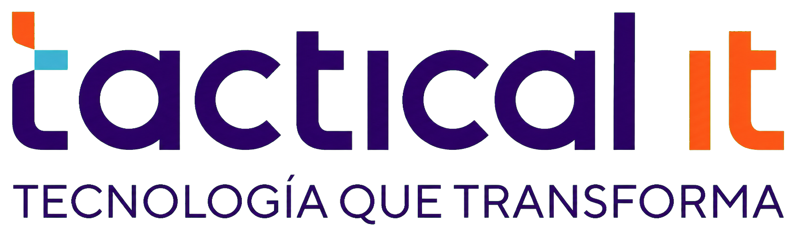

Registro inmediato
Crea una solicitud con todos los datos necesarios y recibe un código único para su seguimiento.

Registra tus solicitudes técnicas, consulta su avance y mantén comunicación clara con nuestro equipo de soporte desde un único portal.
Una experiencia simple y transparente para registrar incidencias y conocer su avance en todo momento.
Crea una solicitud con todos los datos necesarios y recibe un código único para su seguimiento.
Cada caso se clasifica según su impacto para asignar el nivel de atención correspondiente.
Consulta el estado de tu solicitud y conoce el progreso de la atención desde un solo lugar.
Nuestro portal reúne el registro, la priorización y el seguimiento de tus solicitudes para ofrecerte una atención organizada, segura y oportuna.
Inicia sesión y completa los datos del incidente para que nuestro equipo pueda clasificarlo y atenderlo.
Ingresa el código generado para visualizar la prioridad, estado y datos principales del caso.
Protegemos la información del servicio mediante controles de acceso y monitoreo continuo.
Registra tu solicitud y recibe atención especializada con seguimiento claro durante todo el proceso.
Registrar una solicitud